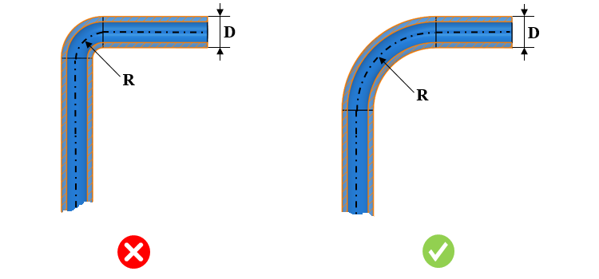

チューブの曲げ半径は、ユーザーが指定した値と同一である必要があります。
非標準で小さすぎる曲げ半径でチューブを製造すると、望ましくない曲げが発生します。通常、非標準の曲げ半径では曲げ部にしわが生じ、接続部が不適切かつ信頼性の低いものになります。その結果、漏れや性能低下といった問題が発生することが確認されています。
本ルールでは、チューブの外径に基づいて、許容される中心曲げ半径を指定するように構成できます。

ここで、
D = チューブ外径
R = 中心曲げ半径
注記：
本ルールは、単一のチューブループで構成されたパーツファイルに対して実行されます。
本ルールは、複数のチューブで構成されたアセンブリファイルに対して実行されます。
チューブの断面形状は円形であり、かつチューブ長さ方向に対して肉厚が一定である必要があります。
ユーザーは、Import ボタンを使用して、Excelシートのテンプレートに含まれる一括データをインポートできます。
標準テンプレート形式：
R |
6 |
8 |
10 |